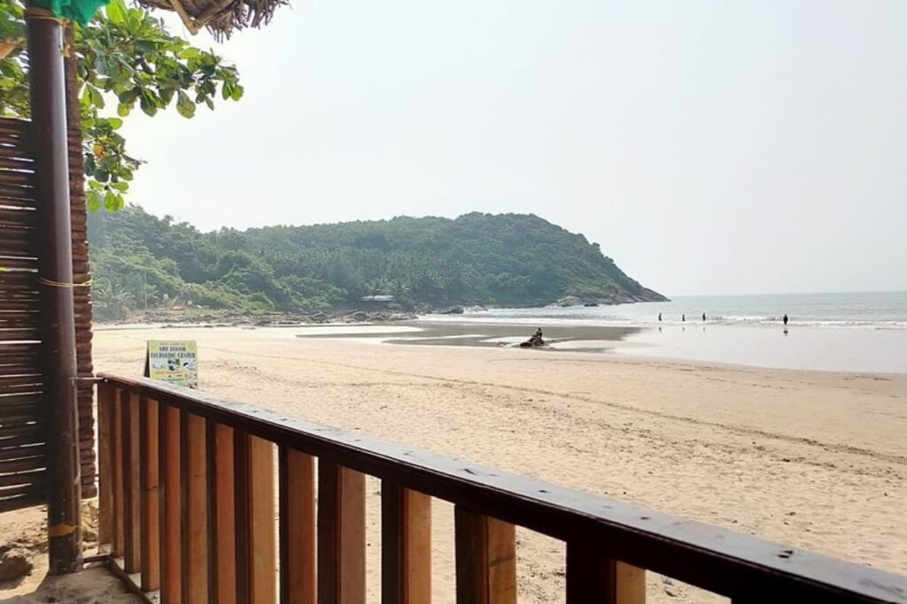
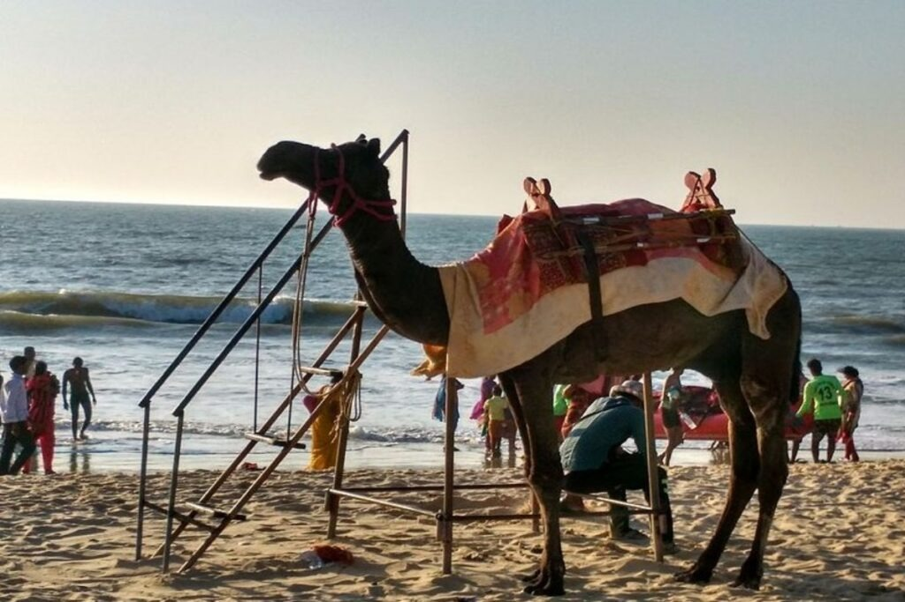

Indeed, Bangalore is an inland city located away from a border or coast. However, the city is relatively close to some of the best beach destinations in South India. No one can say that they do not love beaches. If you are looking for beaches near Bangalore for a long trip or weekend getaway, beaches offer the ideal escape from the busy city life.
The purpose of this post is to help you know about the best beaches near Bangalore. Read on to learn about the beaches you can visit from Bangalore to beat the heat:
Top 5 Beaches Near Bangalore
1.Gokarna Beach
Indeed, Gokarna is located around 500 km away from Bangalore. However, once you are at Gokarna, you can visit three beaches in the city. One of these three beaches is Gokarna Beach.
How to Reach?
If you are travelling by car, you can take the NH 48 and NH 766E routes to reach Gokarna within a 486.5 km drive. Thankfully, many private buses are operated from Bangalore to take tourists to Gokarna. You can book an AC or non-AC bus to reach Gokarna. After reaching Gokarna, you can visit Gokarna Beach, which is the main beach in Gokarna Town.
Key Attractions & Things to Do
Best Time & Season to Visit
For pleasant weather, you can choose to visit this beach between October and March.
Duration to See
It depends on your choice. When you visit the beach in the evening during sunset, you can spend a few hours watching the beauty of Gokarna Beach.
Best Restaurants & Cafes Around
Entry Fee
The entry fee is free and you might have to bear car parking charges of around Rs.10 or 20.
2.Om Beach, Gokarna
Om Beach is yet another important beach in Gokarna. You can cover this beach when you are at Gokarna in your search for the best beaches near Bangalore. This pristine beach is popular for its “om” shape. The beach has achieved this shape due to the meeting of two crescent beaches.
How to Reach?
From Gokarna town, this beach is located within a 7 km drive. So, you can hire a cab or auto to reach the beach within 20 minutes from Gokarna Town.
Key Attractions & Things to Do
Best Time & Season to Visit
You can choose cooler months between October and March to visit this beach. Also, you can choose either early mornings or late evenings to visit.
Duration To Spend
Based on the time of your visit, you can spend three to four hours on this beach easily.
Best Restaurants & Cafes Around
Entry Fee
There is no entry fee to visit Om Beach. However, if you go by your car, you will have to pay parking charges of Rs.10.
3.Kudle Beach, Gokarna
Compared to Om Beach, Kudle Beach is reachable within a short distance from Gokarna Town. This beach is a paradise for those looking for a quiet and peaceful atmosphere. You can enjoy the sunset in a silent atmosphere at this beach.
How to Reach?
You can take either the Namaste Samudra Road or Tarmakki Road and Main Road to reach Kudle Beach from Gokarna Town. As the distance from the town is only around 3 km, you can reach it quickly. You can hire a cab to reach the beach or can come by your car.
Key Attractions & Things to Do
Best Time & Season to Visit
Winter months between October and March will let you enjoy Kudle Beach.
Duration to See
You can spend around 3 hours in this beach.
Best Restaurants & Cafes Around
Entry Fee
There is no fee to enter the Kudle Beach. However, the parking charge is Rs.100 if you go by your vehicle.
4.Murdeshwar Beach
Murdeshwar Beach is located in the coastal town of Murdeshwar. This town is located around 500 km away from Bangalore. As you are looking for beaches near Bangalore, you can consider visiting this town. Apart from this beach, the town has other attractions as well.
How to Reach?
As mentioned earlier, Murdeshwar is located around 500 km away from Bangalore. So, you can choose one of these options to reach the coastal town from Bangalore:
Otherwise, you can also travel by train from Bangalore to reach the coastal town. From Yeshwanthpur Junction, you can take the Panchaganga SF Express that runs towards Karwar to board off at Murdeshwar. Otherwise, you can take Murdeshwar Express from KSR Bengaluru City Junction to reach the coastal town. From your accommodation in Murdeshwar, you can hire a cab to reach the beach. From Bangalore, private bus operators also run buses to Murdeshwar.
Key Attractions & Things to Do
There are also other attractions in Murdeshwar like Murdeshwar Temple, Netrani Island, Jamia Masjid, Murdeshwar Fort and Rajagopuram.
Best Time and Season to Visit
The best time to visit the beach is during sunset. Between October and March is the peak season to visit the coastal town. The moderate season is between March and May and off-season is from June to September. You can plan your visit accordingly.
Duration to See
You can spend at least two to three hours on the beach.
Best Restaurants & Cafes Around
Entry Fee & Ticket Prices
There is no charge to enter the Murdeshwar Beach.
5.Malpe Beach
Malpe Beach is one of the best beaches near Bangalore located at around 412 km away. This beach is located near Udupi. From the city centre, you can reach the beach within a 6 km drive.
How to Reach?
Udupi is located around 406 km away from Bangalore. You will have to travel via NH75 road to reach Udupi within 401.2 km. When you take the Shivamogga – Chitradurga Road, you can reach Udupi within a 459.5 km drive.
Otherwise, you can travel by train or bus to reach Mangalore from Bangalore. From Mangalore, you can find a lot of trains and buses that can take you to Udupi.
After you reach Udupi, you can choose a suitable accommodation. From your accommodation, you can reach Malpe Beach by hiring a cab.
Key Attractions & Things to Do
Best Time & Season to Visit
Peak Season for tourists visiting Udupi is between October and March. You can otherwise choose the moderate season between April and June. The third is off-season between July and September. You can choose a suitable season based on your interests.
Duration to Spend
You can spend two hours of your time at this beach.
Best Restaurants & Cafes Around
Entry Fee: No entry fee
Conclusion
As you are searching for beaches near Bangalore, Ullal Beach, Karwar Beach, Maravanthe Beach, Kaup Beach and Panambur Beach are other beaches to consider. These beaches are located in different cities. You should decide on a beach based on the number of kilometres you are ready to travel from Bangalore.
Some of these beaches near Bangalore are well-maintained. So, you can expect the best cleanliness along with tasty foods on beach-side restaurants. Make sure to book your accommodation in advance based on the city you have planned to travel.